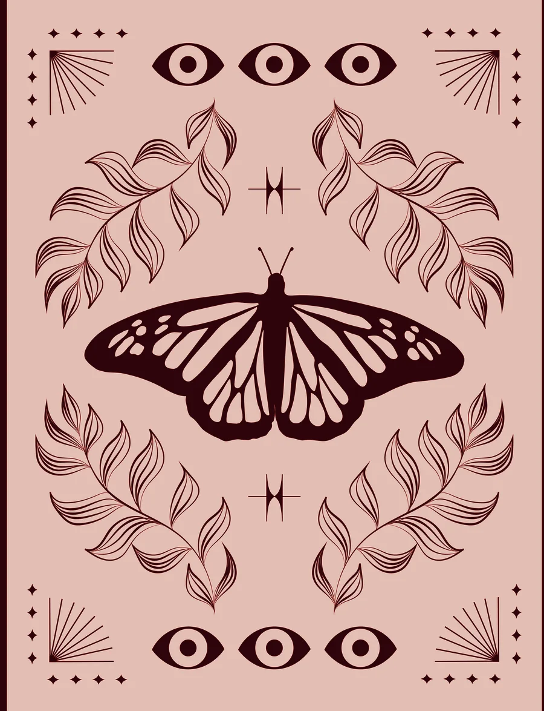

Tu carta
Lo que puede estar presente
Pregunta del oráculo
Un gesto de menos de diez minutos
Para comunicar
Podés volver a consultar si tu estado cambia. No hace falta repetir hasta encontrar una carta “mejor”.
Un oráculo de 28 Ritmos
Hay días para ir hacia adentro y días para ocupar más espacio. Días para sostenerte y días para usar todo lo que está disponible en vos.
Entrá despacio. No venís a responder perfecto. Venís a escuchar qué carta te llama hoy.
No adivina tu fase ni diagnostica síntomas. Te ayuda a observar, nombrar y elegir.

Antes de entrar
No busques una respuesta correcta. Cerrá un momento los ojos, escuchá lo que está vivo en vos y elegí desde la intuición, aunque no sepas explicarlo todavía.
Respirá una vez. Aflojá la mandíbula. Sentí los pies.
Elegir
No pienses demasiado. Tocá la que hoy te mire de vuelta.
Tu carta
Podés volver a consultar si tu estado cambia. No hace falta repetir hasta encontrar una carta “mejor”.